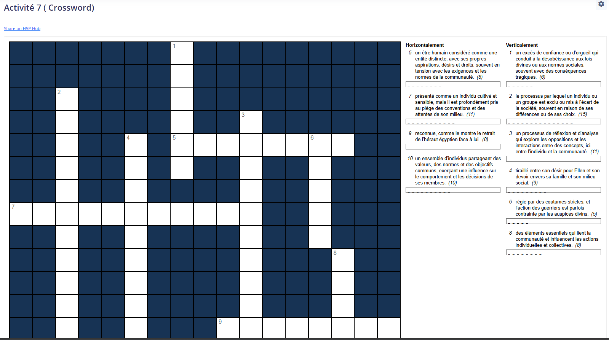

Une section encourage les étudiants à approfondir leurs recherches via une activité ludique.

Figure 17: Activité 7 – Crossword (H5P). Explication : Les étudiants résolvent un mots croisés sur le thème. Commentaire : Stimule la réflexion de manière engageante.